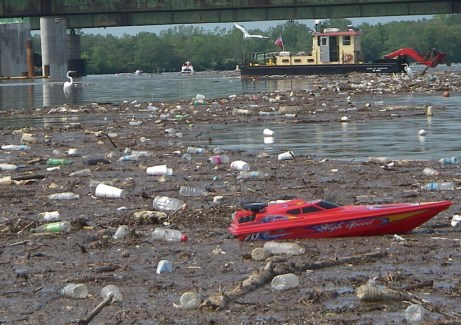

Pollution! In the Bay
A
Pouring water into the sea sounds harmless enough. But in Florida Bay, a large and shallow section of the Gulf of Mexico that lies between the southern end of the Everglades and the Florida Keys, it is proving highly controversial. That is because researchers are divided over whether it will help or hinder the plants and animals that live in the bay.
B
What is at risk is the future of the bay’s extensive beds of seagrasses. These grow on the bay’s muddy floor and act as nurseries for the larvae of shrimps, lobsters and fish – many of the important sport and commercial-fishing species. Also in danger is an impressive range of coral reefs that run the length of the Florida Keys and form the third-largest barrier reef in the world. Since the 1980s, coral cover has dropped by 40%, and a third of the coral species have gone. This has had a damaging effect on the animals that depend on the reef, such as crabs, turtles and nearly 600 species of fish.
C
What is causing such ecological change is a matter of much debate. And the answer is of no small consequence. This is because the American government is planning to devote $8 billion over the next 30 years to revitalise the Everglades. Seasonal freshwater flows into the Everglades are to be restored in order to improve the region’s health. But they will then run off into the bay.
D
Joseph Zieman, a marine ecologist at the University of Virginia, thinks this is a good idea. He believes that a lack of fresh water in the bay is its main problem. The blame, he says, lies with a century of drainage in the Everglades aimed at turning the marshes into farmland and areas for development. This has caused the flow of fresh water into Florida Bay to dwindle, making the water in the bay, overall, more saline. This, he argues, kills the seagrasses, and as these rots, nutrients are released that feed the microscopic plants and animals that live in the water. This, he says, is why the bay’s once crystal-clear waters often resemble pea soup. And in a vicious circle, these turbid blooms block out sunlight, causing more seagrasses to die and yet more turbidity.
E
Brian Lapointe, a marine scientist at the Harbour Branch Oceanographic Institution at Fort Pierce in Florida, disagrees. He thinks seagrasses can tolerate much higher levels of salinity than the bay actually displays. Furthermore, he notes that when freshwater flows through the Everglades were increased experimentally in the 1990s, it led to massive plankton blooms. Freshwater running off from well-fertilised farmlands, he says, caused a fivefold rise in nitrogen levels in the bay. This was like pouring fuel on a fire. The result was mass mortality of seagrasses because of increased turbidity from the plankton. Dr Lapointe adds that, because corals thrive only in waters where nutrient levels are low, restoring freshwater rich in nitrogen will do more damage to the reef.
F
It is a plausible theory. The water flowing off crops that are grown on the750,000 acres of heavily fertilised farmland on the northern edge of the Everglades is rich in nitrogen, half of which ends up in the bay. But Bill Kruczynski, of America’s Environmental Protection Agency, is convinced that nitrogen from farmlands is not the chief problem. Some coral reefs well away from any nitrogen pollution are dying and, curiously, a few are thriving. Dr Kruczynski thinks that increased nutrients arriving from local sewage discharges from the thousands of cesspits along the Florida Keys are part of the problem.
G
Such claims and counterclaims make the impact of the restoration plan difficult to predict. If increased salinity is the main problem, the bay’s ecology will benefit from the Everglades restoration project. If, however, nitrogen is the problem, increasing the flow of freshwater could mate matters much worse.
H
If this second hypothesis proves correct, the cure is to remove nitrogen from farmland or sewage discharges, or perhaps both. Neither will be easy. Man-made wetlands, at present, being built to reduce phosphate runoff into the bay—also from fertilisers—would need an algal culture (a sort of contained algal bloom) added to them to deal with discharges from farmlands. That would be costly. So too would be the replacement of cesspits with proper sewerage—one estimate puts the cost at $650m. Either way, it is clear that when, on December 1st, 3,000 square miles of sea around the reef are designated as a “protective zone” by the deputy secretary of commerce, Sam Bodman, this will do nothing to protect the reef from pollution.
I
Some argue, though, that there is a more fundamental flaw in the plans for the bay: the very idea of returning it to a Utopian ideal before man wrought his damage. Nobody knows what Florida Bay was like before the 1950s when engineers cut the largest canals in the Everglades and took most of the water away. Dr Kruczynski suspects it was more like an estuary. The bay that many people wish to re-create could have been nothing more than a changing phase in the bay’s history.
J
These arguments do not merely threaten to create ecological problems but economic ones as well. The economy of the Florida Keys depends on tourism—the local tourist industry has an annual turnover of $2.5 billion. People come for fishing-boat trips, for manatee watching, or for scuba diving and snorkeling to view the exotically coloured corals. If the plan to restore the Everglades makes problems in the bay and the reef worse, it could prove a very expensive mistake.
Questions 1-4
The reading Passage has seven paragraphs A-J.
Which paragraph contains the following information?
Write the correct letter A-J, in boxes 1-4 on your answer sheet.
1 See grass turned to be more resistant to the saline water level in the Bay.
2 Significance of finding a specific reason in controversy
3 Expensive proposals raised to solve the nitrogen dilemma
4 A statistic of ecological changes in both the coral area and species
Questions 5-8
Use the information in the passage to match the people (listed A-C) with opinions or deeds below.
Write the appropriate letters A-C in boxes 5-8 on your answer sheet.
A Bill Kruczynski
B Brian Lapointe
C Joseph Zieman
5 Drainage system in everglades actually results in high salty water in the bay.
6 Restoring water high in nitrogen level will make more ecological side effect
7 High nitrogen levels may be caused by the nearby farmland.
8 Released sewage rather than nutrients from agricultural area increase the level of Nitrogen.
Questions 9-13
Do the following statements agree with the information given in Reading Passage 2
In boxes 9-13 on your answer sheet, write
TRUE if the statement is true
FALSE if the statement is false
NOT GIVEN if the information is not given in the passage
9 Everyone agrees with “pouring water into the sea is harmless enough” even in the Florida Bay area.
10 Nitrogen was poured in from different types of crops as water flows through.
11 Everglade restoration project can be effective regardless of the cause of the pollution.
12 Human has changed Florida Bay where old image before 1950s is unrecalled.
13 Tourism contributes fundamentally to the Florida Bay area.
---End of the Test---
Please Submit to view your score, solution and explanations.